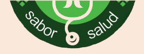

Nutriviandas surgió en el año 2007 en Coronel Suárez y desde su comienzo tiene la opción de delivery totalemente gratuito. La idea surgió de una pizzería, que es donde empezó el emprendimiento, viendo la necesidad de la gente de comer de una manera más saludable.
Nuestro slogan "sabor y salud" se refiere a comer sano sin resignar el sabor de cada preparación.
El nombre "Nutriviandas" es la composición de lo que hacemos, viandas nutritivas sin sal, aditivos ni conservantes.
Elaboramos almuezos y cenas de alta calidad de lunes a viernes y llevamos a domicilio sin cargo adicional. Nutriviandas se adapta a los gustos y necesidades de cada cliente. Al comienzo de cada plan, Nutriviandas entrega una planilla con una varidad de comidas y el cliente elige cual prefiere evitar.
Nutriviandas fue creado por la Licenciada en Nutrición de la Universidad de Buenos Aires María Marcela Muzzolón y cada dieta cuenta con la supervisión de la misma, asegurando resultados a cada plan de salud.